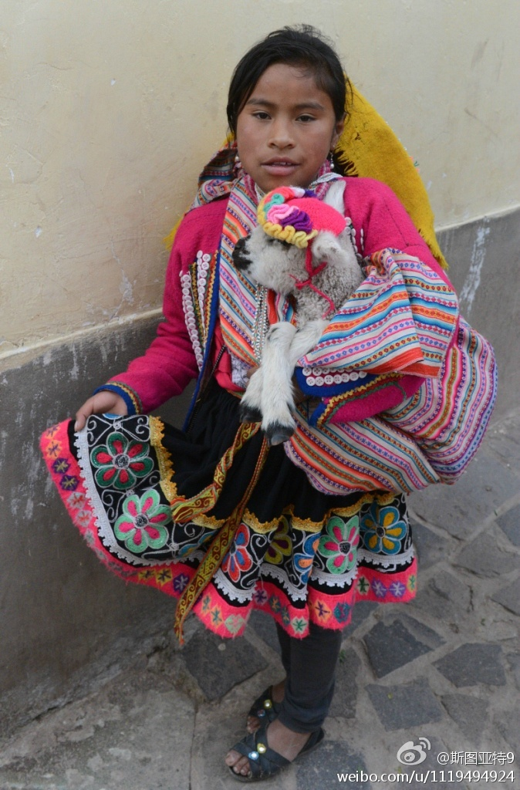
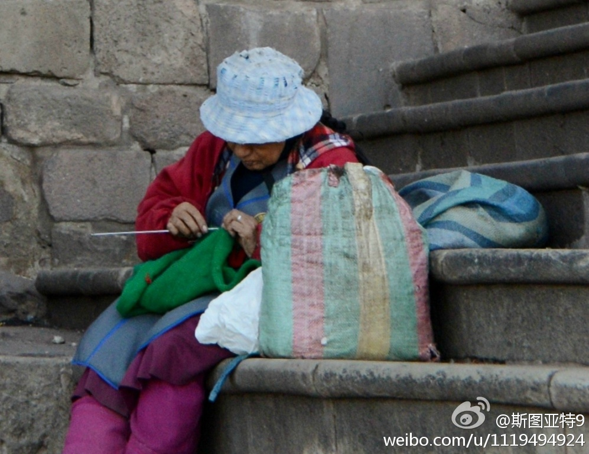
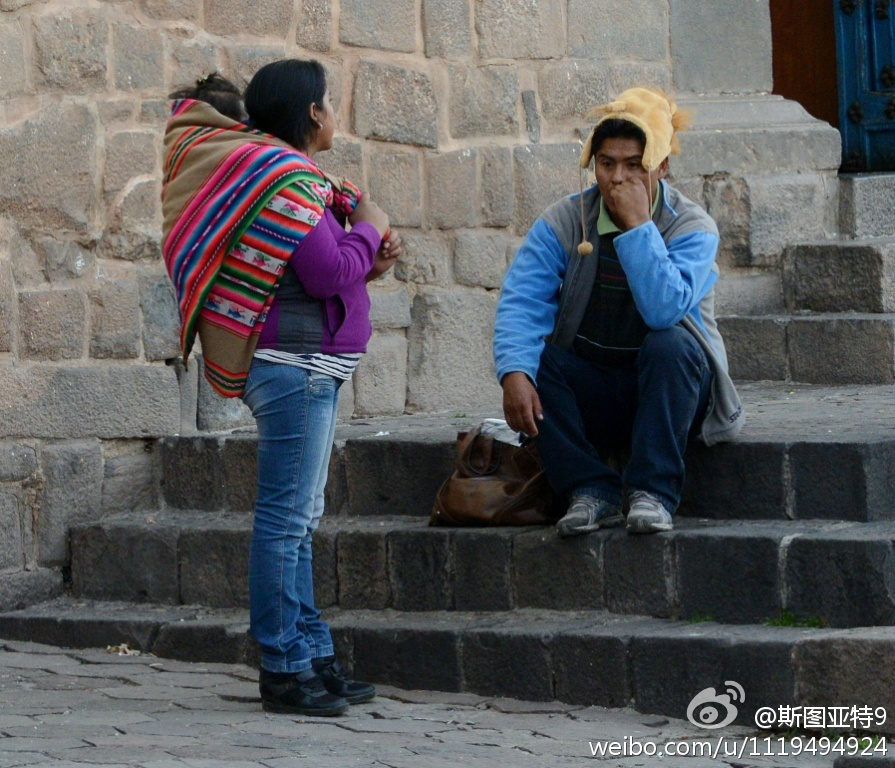
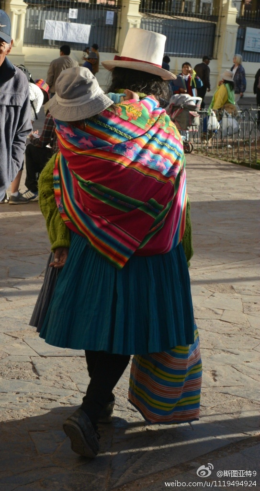
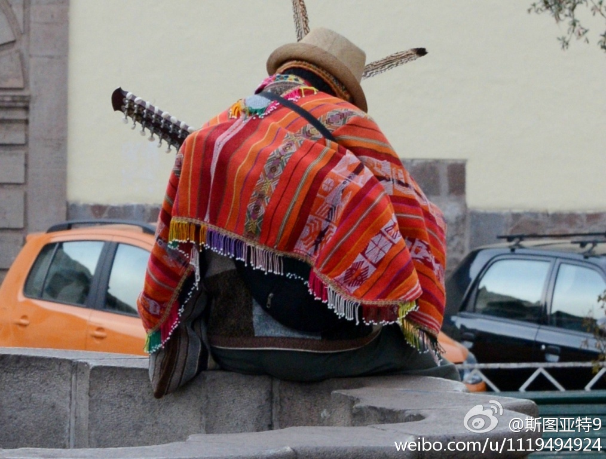
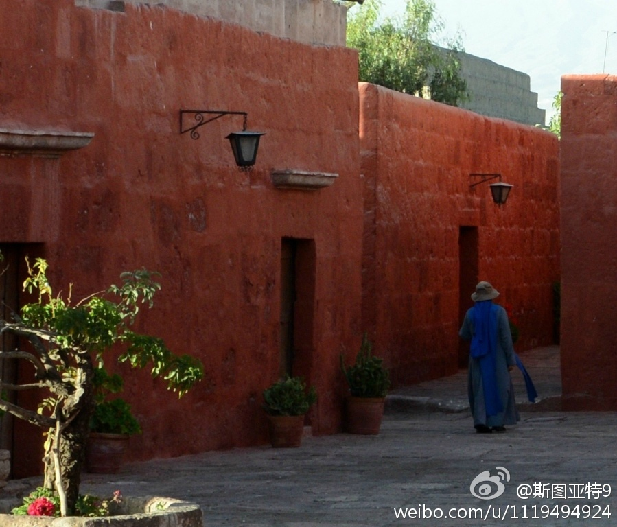

Vaclav Smil认为，不用担心“石油顶点(Peak Oil)”。石油产量不会戛然而止，只会在几十年的时间里缓慢下降。所有使用石油能源的交通工具，除了飞机外，都可以改用液化天然气，而这并不需要什么技术革命或大规模基础设施建设。网页链接
我不知道大家怎么样，反正旅游时候遇到不同服饰的人，我是不敢随便拍照的。怕人家转过头来就管我们要钱，也怕人家觉得对他们不尊重。回来看这次秘鲁行的照片，能找到的人只有零星几个遥远的背影。唯一的一张人脸被要了钱…… 